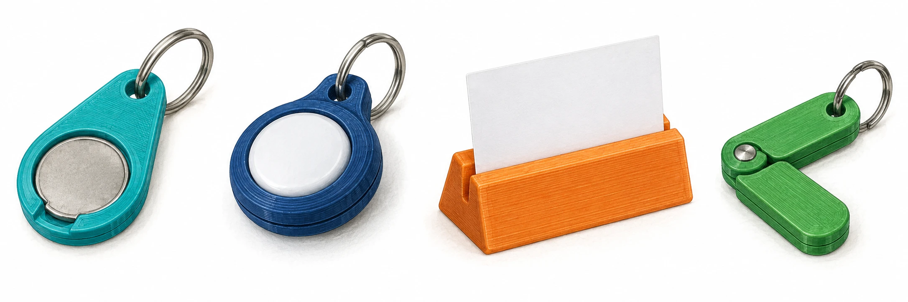

OBSERVER · EXPÉRIMENTER · EXPLIQUER
Concevoir un petit objet utile en 3D
Choisis un porte-jeton, un porte-AirTag, un porte-photo ou un porte-clé articulé. Le site permet de choisir les dimensions et de voir la forme. Les calculs, croquis et justifications restent sur papier. L’impression est préparée et lancée par le professeur.

✎ Garde ta feuille à côté de toi.Ordinateur : manipulations et mesures simulées. Papier : relevés, réponses, calculs et croquis. Matériel réel : essai complémentaire si disponible.
Des observations pour expliquer
- Q1 à Q4 : suis ta fiche. Conserve les réglages, les relevés et les explications sur papier.
Appuie ton explication sur une valeur, un changement observé ou une comparaison. Distingue ce que montre le modèle et ce qui reste à vérifier.